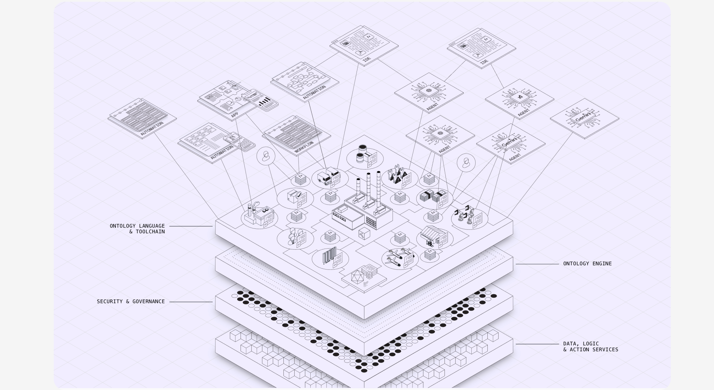

TEND is the operating layer for businesses run by humans. A system that runs in the background while the owner stays in the front.
ChatGPT and Claude are open chats. You bring the context every time. Every conversation starts at zero.
TEND starts with everything already inside.

The map of your business that Tend reasons against every time it answers, drafts, decides, or moves on something.
TEND runs the work that piles up around you, so your best thinking scales while you sleep.
For founders building something real.
For operators who need leverage, not headcount.
For leaders who want their best thinking to scale.
For the team that wants to compound.
For owners who are stretched thin.
For owners stretched thin, operators who need leverage instead of headcount, and founders building something real.
Tend handles the inbox, the follow-ups, the vendor coordination, and the decisions that don't need you — capturing the way you think and running it at scale, in your voice. Every conversation becomes data. Every decision becomes memory. Every workflow becomes leverage.
We look at every tool you use and find where time is leaking. You see exactly which work is repetitive, which follow-ups are getting dropped, and which work AI can take off your team's plate.
We pull every customer, deal, and process into one clean picture. Duplicates merged, records joined across systems. No more spreadsheet stitching, no more "wait, which system has the right number?"
Practical AI agents that follow your team's playbook, not a generic one. They chase the follow-ups, route the tickets, and reconcile the books. Every action goes back into your tools so the team sees what happened.
Faster follow-ups, fewer dropped leads, less admin time, more revenue per employee. We track the numbers so you can show your board exactly what changed.
"We replaced a Zapier graveyard and two contractors. The team gets two hours a day back, and we caught $400K of renewal risk we would have missed last quarter."